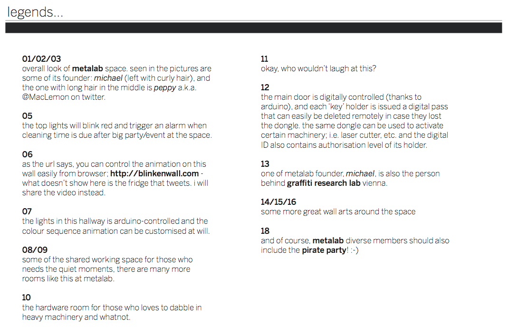
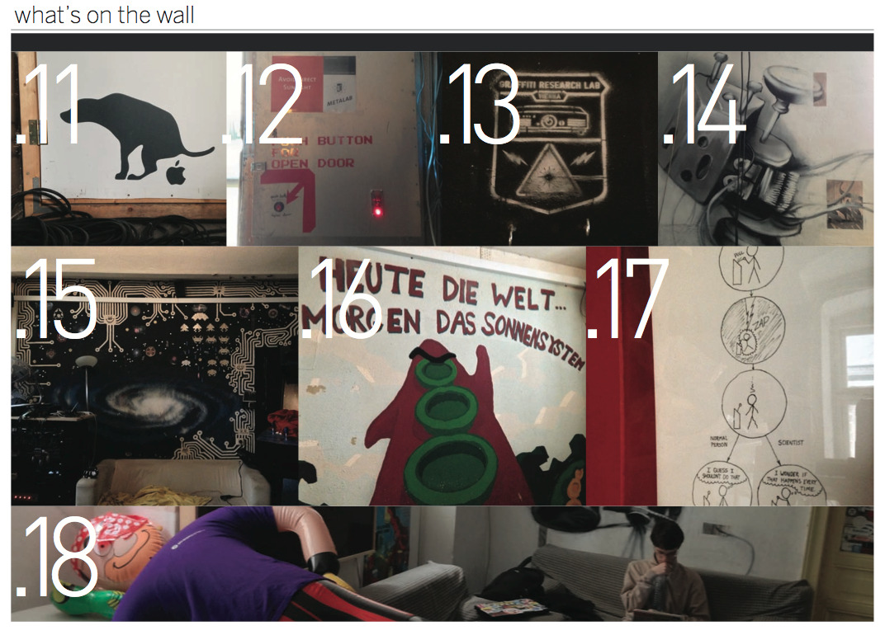
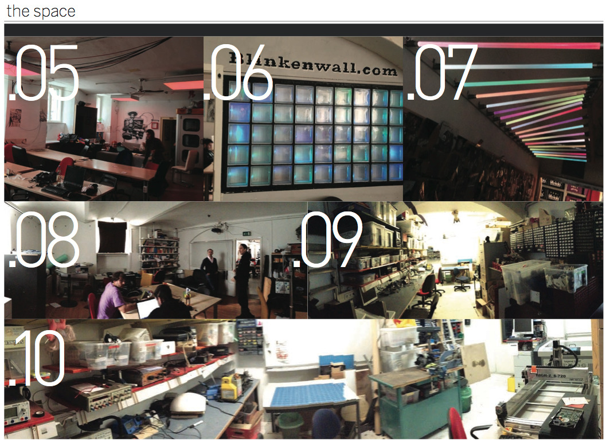
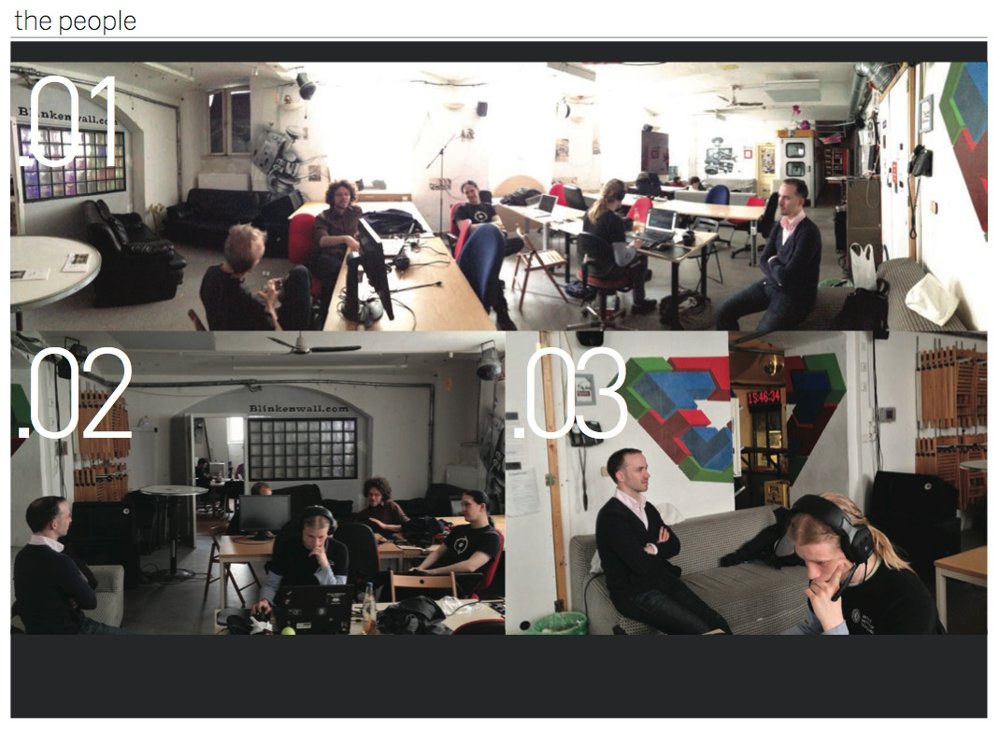

Fri, 07 Jun 2013 12:12:00 · hacker · hackerspace · austria · vienna · metalab · ccc · munich · shanghai · china · germany · code · makers · hacking · travel
that hacking space in vienna few years ago it




That hacking space in Vienna…
—
Few years ago, it was Ultimate Frisbee that became the dot that connects me to people whenever I traveled to new places. Today, it’s HackerSpace. – I know that people haven’t used the term ‘hacking’ since the late 70s but just for the sake of reference, just bear with me for a sec…
I’ve been part of this geeky scene only in the past 3-4 years, and it was all started when I was still based in Shanghai… then it was game over. I’ve soaked up the culture of sharing, learning and having fun like SpongeBob with his bubble blower. Can’t get enough of it. Not to brag (okay, kinda…), but I’ve visited quite a lot of them geeky spaces while traveling and not all of them always wear a 'hackerspace’ tag. I should probably do some sort of backtrack and write #laterStories on each of those space. All in due time, but first let me tell you about MetaLab in Vienna that I visited few weeks ago.
And if you’ve been there I’m sure you must be super stoked as I was, especially when two of its core founders were kind enough to spend time with me and my friends and not only do they gave us a thorough show and tell but also shared their founders tale, which was both inspiring and insightful.
So here’s some visual records of MetaLab that I also shared with fellow geeks at the local Munich HackingRoom, a new initiative that a friend and myself co-started this Spring (stay tuned for this one…).
One thing that impressed me about MetaLab, aside from their awesome collections of cool toys and whatnot, was their strong sense of community. You know that this is more than just a place to go do your own thing and jet off. People not only talk or teach/learn from each other, but they actually care about each other as a person. Now, I don’t mean this as the kind of thing where you call each other up or hangout everyday, but these folks will be there to back your backs when the shit hits the fan. And if that ain’t something that a community should have, I don’t know what is.
I know I can relate with most of my fellow geeks, with the exception that I am a girl (whoa, what?), and could actually 'function’ in nearly every social (party) settings thrown at me; but most of the time regular people won’t even know how to talk with us geeks without making our eyes glazed over with boredom after few minutes of chit chat. This goes both ways, mind you. Even I found myself bored at times. These peeps could definitely go on a tangent about circuit boards, code strings, etc. for hours. But guess what, we now live in an era whether we code or die. I am a designer by trade, and now I had to learn how to code so I could bring that prototype ideas to life. Trust me, the irony doesn’t escape me.
Back to MetaLab…
Their space and the peeps definitely reminded me of my favourite HackerSpace, XinCheJian. Not only was I welcomed there but our friendships extended beyond grasping the notion on how to code or make something. I definitely missed being in the nick of fast-pace learning vibes, so continuing my quest I will…